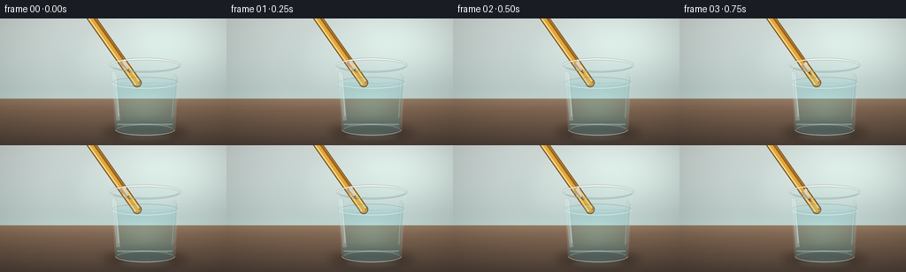
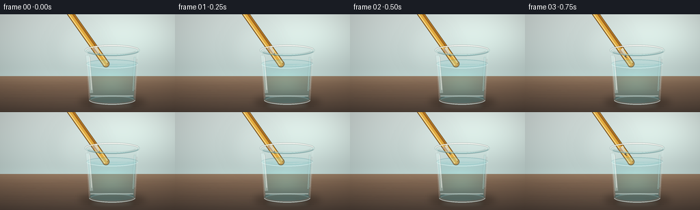
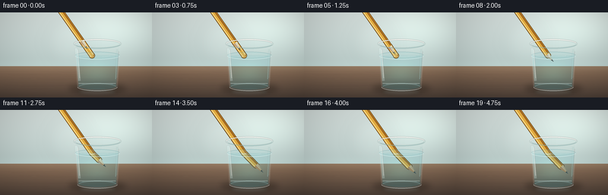
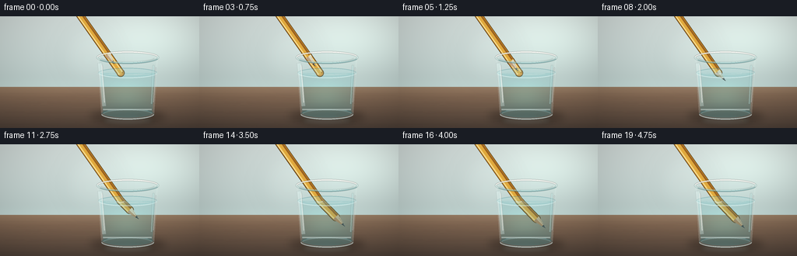

CODING AGENTS AS PIXEL WORLD MODELS
traex/DeepSeek-V4.1-Flash · phygen_073
点击播放 · 原生 RGB 像素
逐轮保存的候选
回放视频、检查图与代码变化。
每份候选均可单独播放。实际图片检查记录在下方工具轨迹中。
候选 01播放与检查图
点击播放 · 原生 RGB 像素


展开代码变化
--- 上一保存版本
+++ 本次保存版本
@@ -0,0 +1,487 @@
+from pathlib import Path
+import math
+
+import numpy as np
+from PIL import Image, ImageDraw, ImageFilter
+
+import artifact_io
+
+
+CASE_DIR = Path(__file__).resolve().parent
+WIDTH, HEIGHT = 256, 144
+FRAMES, FPS = 20, 4.0
+SS = 4
+W, H = WIDTH * SS, HEIGHT * SS
+
+
+def rgb(value):
+ return tuple(int(value[i:i + 2], 16) for i in (1, 3, 5))
+
+
+def rgba(color, alpha=255):
+ if len(color) == 3:
+ return (*color, int(alpha))
+ return color
+
+
+def smoothstep(value):
+ value = min(1.0, max(0.0, value))
+ return value * value * (3.0 - 2.0 * value)
+
+
+def scaled_point(point):
+ return (point[0] * SS, point[1] * SS)
+
+
+def scaled_box(box):
+ return tuple(int(v * SS) for v in box)
+
+
+def gradient_image(top, bottom, height, width=W):
+ t = np.linspace(0.0, 1.0, height, dtype=np.float32)[:, None, None]
+ top_arr = np.array(top, dtype=np.float32)[None, None, :]
+ bottom_arr = np.array(bottom, dtype=np.float32)[None, None, :]
+ row = top_arr * (1.0 - t) + bottom_arr * t
+ return np.repeat(row, width, axis=1)
+
+
+def soft_mask(mask, blur):
+ return np.asarray(Image.fromarray(mask).filter(ImageFilter.GaussianBlur(blur)), dtype=np.float32) / 255.0
+
+
+def make_background(frame_index):
+ horizon = int(91 * SS)
+ backdrop = gradient_image(rgb("#dce6e3"), rgb("#b9cbc8"), horizon)
+ table = gradient_image(rgb("#8f7159"), rgb("#4f4138"), H - horizon)
+ image = np.empty((H, W, 3), dtype=np.float32)
+ image[:horizon] = backdrop
+ image[horizon:] = table
+
+ yy, xx = np.mgrid[0:H, 0:W].astype(np.float32)
+ glow = np.exp(-(((xx - 201 * SS) / (78 * SS)) ** 2 + ((yy - 27 * SS) / (43 * SS)) ** 2))
+ image += glow[:, :, None] * np.array([25, 30, 27], dtype=np.float32)
+
+ horizon_glow = np.exp(-((yy - horizon) / (9 * SS)) ** 2) * 12
+ image += horizon_glow[:, :, None] * np.array([0.5, 0.7, 0.65], dtype=np.float32)
+
+ vignette = np.clip((((xx - W / 2) / (W * 0.66)) ** 2 + ((yy - H / 2) / (H * 0.74)) ** 2), 0, 1)
+ image *= (1.0 - 0.18 * vignette)[:, :, None]
+
+ base = Image.fromarray(np.clip(image, 0, 255).astype(np.uint8), "RGB").convert("RGBA")
+ grain = Image.new("RGBA", (W, H), (0, 0, 0, 0))
+ draw = ImageDraw.Draw(grain)
+ rng = np.random.default_rng(73)
+ for _ in range(52):
+ y = rng.integers(horizon + 3 * SS, H - 2 * SS)
+ x0 = rng.integers(-30 * SS, W // 2)
+ x1 = rng.integers(W // 2, W + 30 * SS)
+ bend = rng.integers(-2 * SS, 3 * SS)
+ alpha = int(rng.integers(7, 19))
+ color = (38, 27, 20, alpha) if rng.random() < 0.68 else (230, 201, 164, alpha)
+ draw.line(
+ [(x0, y), ((x0 + x1) // 2, y + bend), (x1, y + rng.integers(-SS, SS + 1))],
+ fill=color,
+ width=int(rng.integers(1, 3)),
+ )
+ base = Image.alpha_composite(base, grain.filter(ImageFilter.GaussianBlur(0.45 * SS)))
+
+ haze = Image.new("RGBA", (W, H), (0, 0, 0, 0))
+ hdraw = ImageDraw.Draw(haze)
+ shift = int(math.sin(frame_index * 0.22) * SS)
+ hdraw.ellipse(
+ scaled_box((78 + shift, 10, 151 + shift, 91)),
+ fill=(245, 250, 246, 12),
+ )
+ return Image.alpha_composite(base, haze.filter(ImageFilter.GaussianBlur(12 * SS)))
+
+
+def glass_geometry():
+ top = (164.0, 53.0)
+ bottom = (164.0, 126.0)
+ top_rx, top_ry = 40.0, 8.0
+ base_rx, base_ry = 34.0, 7.0
+ return top, bottom, top_rx, top_ry, base_rx, base_ry
+
+
+def body_points(center, rx, y):
+ return (center - rx, y), (center + rx, y)
+
+
+def draw_shadow_and_reflection(image):
+ shadow = Image.new("RGBA", (W, H), (0, 0, 0, 0))
+ draw = ImageDraw.Draw(shadow)
+ draw.ellipse(scaled_box((116, 121, 212, 137)), fill=(28, 20, 14, 92))
+ draw.ellipse(scaled_box((130, 120, 199, 132)), fill=(17, 13, 10, 80))
+ shadow = shadow.filter(ImageFilter.GaussianBlur(5.0 * SS))
+ image = Image.alpha_composite(image, shadow)
+
+ reflection = Image.new("RGBA", (W, H), (0, 0, 0, 0))
+ rdraw = ImageDraw.Draw(reflection)
+ rdraw.ellipse(scaled_box((131, 128, 197, 140)), fill=(155, 211, 210, 34))
+ rdraw.ellipse(scaled_box((139, 130, 188, 137)), fill=(229, 244, 238, 28))
+ reflection = reflection.filter(ImageFilter.GaussianBlur(3.2 * SS))
+ return Image.alpha_composite(image, reflection)
+
+
+def glass_outer_mask():
+ mask = Image.new("L", (W, H), 0)
+ draw = ImageDraw.Draw(mask)
+ top, bottom, trx, try_, brx, bry = glass_geometry()
+ draw.polygon(
+ [
+ scaled_point((top[0] - trx + 1.2, top[1])),
+ scaled_point((bottom[0] - brx, bottom[1])),
+ scaled_point((bottom[0] + brx, bottom[1])),
+ scaled_point((top[0] + trx - 1.2, top[1])),
+ ],
+ fill=255,
+ )
+ draw.ellipse(scaled_box((top[0] - trx, top[1] - try_, top[0] + trx, top[1] + try_)), fill=255)
+ draw.ellipse(scaled_box((bottom[0] - brx, bottom[1] - bry, bottom[0] + brx, bottom[1] + bry)), fill=255)
+ return mask
+
+
+def glass_inner_mask():
+ mask = Image.new("L", (W, H), 0)
+ draw = ImageDraw.Draw(mask)
+ top, bottom, trx, try_, brx, bry = glass_geometry()
+ draw.polygon(
+ [
+ scaled_point((top[0] - trx + 3.0, top[1] + 0.5)),
+ scaled_point((bottom[0] - brx + 2.4, bottom[1] - 1.2)),
+ scaled_point((bottom[0] + brx - 2.4, bottom[1] - 1.2)),
+ scaled_point((top[0] + trx - 3.0, top[1] + 0.5)),
+ ],
+ fill=255,
+ )
+ draw.ellipse(
+ scaled_box((top[0] - trx + 3, top[1] - try_ + 1.1, top[0] + trx - 3, top[1] + try_ - 1.1)),
+ fill=255,
+ )
+ draw.ellipse(
+ scaled_box((bottom[0] - brx + 2.4, bottom[1] - bry, bottom[0] + brx - 2.4, bottom[1] + bry - 2.3)),
+ fill=255,
+ )
+ return mask
+
+
+def composite_mask(image, color, mask, alpha):
+ color_layer = Image.new("RGBA", (W, H), rgba(color, alpha))
+ color_layer.putalpha(Image.fromarray(np.minimum(np.asarray(mask), alpha).astype(np.uint8), "L"))
+ return Image.alpha_composite(image, color_layer)
+
+
+def draw_glass_back(image):
+ outer = np.asarray(glass_outer_mask(), dtype=np.float32) / 255.0
+ inner = np.asarray(glass_inner_mask(), dtype=np.float32) / 255.0
+ edge = np.clip(outer - inner, 0, 1)
+
+ arr = np.asarray(image).astype(np.float32)
+ color = arr[:, :, :3]
+ tint = np.array([188, 226, 224], dtype=np.float32)
+ color = color * (1 - 0.055 * inner[:, :, None]) + tint * (0.055 * inner[:, :, None])
+ color = color * (1 - 0.12 * edge[:, :, None]) + np.array([222, 242, 237], dtype=np.float32) * (0.12 * edge[:, :, None])
+ arr[:, :, :3] = color
+ image = Image.fromarray(np.clip(arr, 0, 255).astype(np.uint8), "RGBA")
+
+ back = Image.new("RGBA", (W, H), (0, 0, 0, 0))
+ draw = ImageDraw.Draw(back)
+ top, bottom, trx, try_, brx, bry = glass_geometry()
+ draw.arc(
+ scaled_box((top[0] - trx + 2, top[1] - try_ + 1, top[0] + trx - 2, top[1] + try_ - 1)),
+ 190,
+ 350,
+ fill=(235, 248, 245, 100),
+ width=max(1, int(1.2 * SS)),
+ )
+ draw.arc(
+ scaled_box((bottom[0] - brx + 2, bottom[1] - bry + 1, bottom[0] + brx - 2, bottom[1] + bry - 1)),
+ 190,
+ 350,
+ fill=(219, 242, 240, 90),
+ width=max(1, int(1.0 * SS)),
+ )
+ return Image.alpha_composite(image, back)
+
+
+def water_mask(water_y):
+ inner = np.asarray(glass_inner_mask(), dtype=np.uint8)
+ yy = np.arange(H)[:, None]
+ mask = inner.copy()
+ mask[np.broadcast_to(yy < water_y * SS, mask.shape)] = 0
+ return Image.fromarray(mask, "L")
+
+
+def draw_water_back(image, frame_index, water_y):
+ mask = np.asarray(water_mask(water_y), dtype=np.float32) / 255.0
+ arr = np.asarray(image).astype(np.float32)
+ color = arr[:, :, :3]
+ yy = np.linspace(0, 1, H, dtype=np.float32)[:, None]
+ water_alpha = (0.15 + 0.10 * np.clip((yy * H - water_y * SS) / (55 * SS), 0, 1))[:, :, None]
+ water_color = np.array([77, 161, 170], dtype=np.float32)[None, None, :]
+ blend = water_alpha * mask[:, :, None]
+ color = color * (1 - blend) + water_color * blend
+
+ caustic = np.exp(-(((np.mgrid[0:H, 0:W][1] - 163 * SS) / (31 * SS)) ** 2 +
+ ((np.mgrid[0:H, 0:W][0] - 103 * SS) / (17 * SS)) ** 2))
+ caustic *= mask
+ color += caustic[:, :, None] * np.array([12, 24, 21], dtype=np.float32)
+ arr[:, :, :3] = color
+ return Image.fromarray(np.clip(arr, 0, 255).astype(np.uint8), "RGBA")
+
+
+def offset_polyline(points, normal, offset):
+ return [(p[0] + normal[0] * offset, p[1] + normal[1] * offset) for p in points]
+
+
+def draw_pencil(image, tip_center, water_y, frame_index):
+ water_y_px = water_y * SS
+ entry = np.array([155.0 * SS, water_y_px], dtype=np.float32)
+ d1 = np.array([0.5735, 0.8192], dtype=np.float32)
+ start = entry - d1 * (129.0 * SS)
+ tip = np.array([tip_center[0] * SS, tip_center[1] * SS], dtype=np.float32)
+
+ below = tip[1] > entry[1]
+ if below:
+ d2_vec = tip - entry
+ d2 = d2_vec / max(1e-6, float(np.linalg.norm(d2_vec)))
+ magnification = 1.0 + 0.09 * smoothstep((tip[1] - entry[1]) / (40 * SS))
+ else:
+ d2 = d1
+ magnification = 1.0
+
+ width_air = 8.4 * SS
+ width_water = width_air * magnification
+ tip_len = 15.5 * SS * magnification
+ graphite_len = 4.4 * SS * magnification
+ body_center = tip - d2 * tip_len
+
+ pencil = Image.new("RGBA", (W, H), (0, 0, 0, 0))
+ draw = ImageDraw.Draw(pencil)
+
+ points = [tuple(start), tuple(entry)]
+ if below:
+ points.append(tuple(body_center))
+ else:
+ points.append(tuple(body_center))
+
+ widths = []
+ for i in range(len(points) - 1):
+ mid_y = (points[i][1] + points[i + 1][1]) * 0.5
+ widths.append(width_water if mid_y > water_y_px else width_air)
+
+ def draw_path(offset, band_width, color):
+ for idx in range(len(points) - 1):
+ p0 = np.array(points[idx], dtype=np.float32)
+ p1 = np.array(points[idx + 1], dtype=np.float32)
+ delta = p1 - p0
+ length = max(1e-6, float(np.linalg.norm(delta)))
+ normal = np.array([-delta[1] / length, delta[0] / length], dtype=np.float32)
+ q0 = p0 + normal * offset
+ q1 = p1 + normal * offset
+ draw.line([tuple(q0), tuple(q1)], fill=color, width=max(1, int(round(band_width))))
+ radius = band_width * 0.5
+ draw.ellipse(
+ (q1[0] - radius, q1[1] - radius, q1[0] + radius, q1[1] + radius),
+ fill=color,
+ )
+
+ for idx in range(len(points) - 1):
+ local_width = widths[idx]
+ draw_path(0, local_width + 1.7 * SS, rgba(rgb("#59401f"), 255))
+ draw_path(0, local_width, rgba(rgb("#c88a2a"), 255))
+ draw_path(-0.27 * local_width, 0.30 * local_width, rgba(rgb("#9b6220"), 255))
+ draw_path(0.02 * local_width, 0.40 * local_width, rgba(rgb("#dfa83d"), 255))
+ draw_path(0.31 * local_width, 0.22 * local_width, rgba(rgb("#f2ca68"), 255))
+ draw_path(0.34 * local_width, 0.055 * local_width, rgba(rgb("#fff1b7"), 205))
+
+ normal2 = np.array([-d2[1], d2[0]], dtype=np.float32)
+ half_w = width_water * 0.5
+ left = body_center + normal2 * half_w
+ right = body_center - normal2 * half_w
+ tip_poly = [tuple(left), tuple(right), tuple(tip)]
+ draw.polygon(tip_poly, fill=rgba(rgb("#d5a96f")), outline=rgba(rgb("#725035")), width=max(1, int(1.0 * SS)))
+
+ mid = body_center + d2 * (tip_len * 0.48)
+ draw.polygon(
+ [tuple(left), tuple(body_center - normal2 * half_w * 0.05), tuple(mid), tuple(tip)],
+ fill=rgba(rgb("#b97d48"), 155),
+ )
+ draw.polygon(
+ [tuple(right), tuple(body_center + normal2 * half_w * 0.04), tuple(mid + d2 * 1.8 * SS), tuple(tip)],
+ fill=rgba(rgb("#f1cf99"), 110),
+ )
+
+ for k in range(4):
+ t0 = 0.20 + k * 0.17
+ t1 = min(0.86, t0 + 0.11)
+ p0 = body_center + d2 * (tip_len * t0)
+ p1 = body_center + d2 * (tip_len * t1)
+ spread0 = half_w * (1.0 - t0) * 0.66
+ spread1 = half_w * (1.0 - t1) * 0.66
+ draw.line(
+ [tuple(p0 - normal2 * spread0), tuple(p1 - normal2 * spread1)],
+ fill=rgba(rgb("#8f603b"), 95),
+ width=max(1, int(0.55 * SS)),
+ )
+
+ graphite_base = tip - d2 * graphite_len
+ ghalf = half_w * (graphite_len / tip_len) * 0.88
+ draw.polygon(
+ [
+ tuple(graphite_base + normal2 * ghalf),
+ tuple(graphite_base - normal2 * ghalf),
+ tuple(tip),
+ ],
+ fill=rgba(rgb("#25282a")),
+ )
+ draw.line(
+ [tuple(graphite_base - normal2 * ghalf * 0.15), tuple(tip - normal2 * 0.5 * SS)],
+ fill=rgba(rgb("#737679"), 165),
+ width=max(1, int(0.65 * SS)),
+ )
+
+ if below:
+ water_layer = Image.new("RGBA", (W, H), (74, 154, 161, 0))
+ alpha = np.asarray(pencil.getchannel("A"), dtype=np.float32)
+ mask_np = np.asarray(water_mask(water_y), dtype=np.float32) / 255.0
+ water_layer.putalpha(Image.fromarray(np.clip(alpha * mask_np * 0.22, 0, 255).astype(np.uint8), "L"))
+ pencil = Image.alpha_composite(pencil, water_layer)
+
+ return Image.alpha_composite(image, pencil), entry / SS, d1, below
+
+
+def draw_water_surface(image, frame_index, water_y, entry, below):
+ top, bottom, trx, try_, brx, bry = glass_geometry()
+ overlay = Image.new("RGBA", (W, H), (0, 0, 0, 0))
+ draw = ImageDraw.Draw(overlay)
+ phase = frame_index * 0.52
+
+ surface_box = scaled_box((top[0] - trx + 2.0, water_y - 6.5, top[0] + trx - 2.0, water_y + 6.5))
+ draw.ellipse(surface_box, fill=(151, 216, 218, 42))
+ draw.arc(surface_box, 8, 172, fill=(224, 248, 246, 148), width=max(1, int(1.0 * SS)))
+ draw.arc(surface_box, 190, 350, fill=(75, 145, 153, 94), width=max(1, int(0.8 * SS)))
+
+ for k in range(3):
+ rx = (22 + k * 6.2 + 1.1 * math.sin(phase + k)) * SS
+ ry = (2.1 + 0.28 * math.sin(phase * 0.8 + k)) * SS
+ cx = (164 + 3.0 * math.sin(phase * 0.7 + k * 1.7)) * SS
+ cy = (water_y + 0.4 * math.sin(phase + k)) * SS
+ draw.arc(
+ (cx - rx, cy - ry, cx + rx, cy + ry),
+ 12 + k * 13,
+ 166 - k * 8,
+ fill=(222, 248, 244, 85 - k * 15),
+ width=max(1, int((0.62 + 0.08 * k) * SS)),
+ )
+
+ if below:
+ radius = (3.4 + 0.55 * math.sin(phase * 1.4)) * SS
+ ex, ey = entry[0] * SS, water_y * SS
+ draw.arc(
+ (ex - radius * 1.25, ey - radius * 0.52, ex + radius * 1.25, ey + radius * 0.52),
+ 4,
+ 176,
+ fill=(246, 253, 249, 180),
+ width=max(1, int(0.8 * SS)),
+ )
+ draw.arc(
+ (ex - radius * 1.8, ey - radius * 0.75, ex + radius * 1.8, ey + radius * 0.75),
+ 8,
+ 172,
+ fill=(213, 243, 240, 90),
+ width=max(1, int(0.55 * SS)),
+ )
+
+ return Image.alpha_composite(image, overlay)
+
+
+def draw_glass_front(image, frame_index):
+ top, bottom, trx, try_, brx, bry = glass_geometry()
+ overlay = Image.new("RGBA", (W, H), (0, 0, 0, 0))
+ draw = ImageDraw.Draw(overlay)
+ shimmer = 0.5 + 0.5 * math.sin(frame_index * 0.36)
+
+ draw.line(
+ [scaled_point((128.0, 60.0)), scaled_point((133.5, 116.0))],
+ fill=(231, 250, 247, 58),
+ width=int(5.0 * SS),
+ )
+ draw.line(
+ [scaled_point((131.0, 63.0)), scaled_point((134.0, 111.0))],
+ fill=(255, 255, 250, int(110 + 25 * shimmer)),
+ width=int(1.25 * SS),
+ )
+ draw.line(
+ [scaled_point((197.0, 63.0)), scaled_point((194.5, 113.0))],
+ fill=(186, 231, 229, 62),
+ width=int(2.0 * SS),
+ )
+ draw.line(
+ [scaled_point((200.2, 66.0)), scaled_point((197.2, 111.0))],
+ fill=(247, 255, 251, 120),
+ width=int(0.85 * SS),
+ )
+
+ rim_box = scaled_box((top[0] - trx, top[1] - try_, top[0] + trx, top[1] + try_))
+ draw.ellipse(rim_box, outline=(224, 246, 242, 178), width=int(1.6 * SS))
+ draw.arc(rim_box, 188, 344, fill=(255, 255, 250, 225), width=int(2.0 * SS))
+ draw.arc(rim_box, 15, 153, fill=(139, 193, 192, 150), width=int(1.1 * SS))
+
+ base_box = scaled_box((bottom[0] - brx, bottom[1] - bry, bottom[0] + brx, bottom[1] + bry))
+ draw.arc(base_box, 2, 178, fill=(231, 249, 244, 150), width=int(1.4 * SS))
+ draw.arc(base_box, 185, 350, fill=(107, 163, 162, 105), width=int(1.1 * SS))
+ draw.line(
+ [scaled_point((132.0, 120.0)), scaled_point((195.0, 120.0))],
+ fill=(231, 248, 243, 74),
+ width=int(2.1 * SS),
+ )
+
+ overlay = overlay.filter(ImageFilter.GaussianBlur(0.28 * SS))
+ return Image.alpha_composite(image, overlay)
+
+
+def draw_pencil_reflection(image, tip_center, frame_index):
+ overlay = Image.new("RGBA", (W, H), (0, 0, 0, 0))
+ draw = ImageDraw.Draw(overlay)
+ x = 179 + (tip_center[1] - 75) * 0.10
+ draw.line(
+ [scaled_point((x, 126.5)), scaled_point((x + 8.0, 137.0))],
+ fill=(221, 165, 70, 22),
+ width=int(2.0 * SS),
+ )
+ overlay = overlay.filter(ImageFilter.GaussianBlur(1.2 * SS))
+ return Image.alpha_composite(image, overlay)
+
+
+def render_frame(index):
+ t = index / (FRAMES - 1)
+ progress = smoothstep((t - 0.03) / 0.82)
+ distance = -14.0 + 57.0 * progress
+ entry_x = 155.0
+ water_y = 73.0
+ d1 = np.array([0.5735, 0.8192])
+ tip_y = water_y + distance * d1[1]
+ tip_x = entry_x + distance * d1[0]
+ if distance > 0:
+ bend = 9.2 * smoothstep(distance / 43.0)
+ tip_x += bend
+
+ image = make_background(index)
+ image = draw_shadow_and_reflection(image)
+ image = draw_glass_back(image)
+ image = draw_water_back(image, index, water_y)
+ image, entry, d1, below = draw_pencil(image, (tip_x, tip_y), water_y, index)
+ image = draw_water_surface(image, index, water_y, entry, below)
+ image = draw_glass_front(image, index)
+ image = draw_pencil_reflection(image, (tip_x, tip_y), index)
+ return np.asarray(image.convert("RGB").resize((WIDTH, HEIGHT), Image.Resampling.LANCZOS), dtype=np.uint8)
+
+
+def main():
+ frames = np.stack([render_frame(index) for index in range(FRAMES)])
+ artifact_io.save(frames, CASE_DIR)
+
+
+if __name__ == "__main__":
+ main()
候选 02播放与检查图
点击播放 · 原生 RGB 像素


展开代码变化
--- 上一保存版本
+++ 本次保存版本
@@ -179,8 +179,8 @@
arr = np.asarray(image).astype(np.float32)
color = arr[:, :, :3]
tint = np.array([188, 226, 224], dtype=np.float32)
- color = color * (1 - 0.055 * inner[:, :, None]) + tint * (0.055 * inner[:, :, None])
- color = color * (1 - 0.12 * edge[:, :, None]) + np.array([222, 242, 237], dtype=np.float32) * (0.12 * edge[:, :, None])
+ color = color * (1 - 0.085 * inner[:, :, None]) + tint * (0.085 * inner[:, :, None])
+ color = color * (1 - 0.20 * edge[:, :, None]) + np.array([222, 242, 237], dtype=np.float32) * (0.20 * edge[:, :, None])
arr[:, :, :3] = color
image = Image.fromarray(np.clip(arr, 0, 255).astype(np.uint8), "RGBA")
@@ -217,8 +217,8 @@
arr = np.asarray(image).astype(np.float32)
color = arr[:, :, :3]
yy = np.linspace(0, 1, H, dtype=np.float32)[:, None]
- water_alpha = (0.15 + 0.10 * np.clip((yy * H - water_y * SS) / (55 * SS), 0, 1))[:, :, None]
- water_color = np.array([77, 161, 170], dtype=np.float32)[None, None, :]
+ water_alpha = (0.19 + 0.10 * np.clip((yy * H - water_y * SS) / (55 * SS), 0, 1))[:, :, None]
+ water_color = np.array([91, 169, 174], dtype=np.float32)[None, None, :]
blend = water_alpha * mask[:, :, None]
color = color * (1 - blend) + water_color * blend
@@ -358,9 +358,9 @@
phase = frame_index * 0.52
surface_box = scaled_box((top[0] - trx + 2.0, water_y - 6.5, top[0] + trx - 2.0, water_y + 6.5))
- draw.ellipse(surface_box, fill=(151, 216, 218, 42))
- draw.arc(surface_box, 8, 172, fill=(224, 248, 246, 148), width=max(1, int(1.0 * SS)))
- draw.arc(surface_box, 190, 350, fill=(75, 145, 153, 94), width=max(1, int(0.8 * SS)))
+ draw.ellipse(surface_box, fill=(151, 216, 218, 56))
+ draw.arc(surface_box, 8, 172, fill=(224, 248, 246, 176), width=max(1, int(1.1 * SS)))
+ draw.arc(surface_box, 190, 350, fill=(75, 145, 153, 120), width=max(1, int(0.9 * SS)))
for k in range(3):
rx = (22 + k * 6.2 + 1.1 * math.sin(phase + k)) * SS
@@ -404,37 +404,49 @@
draw.line(
[scaled_point((128.0, 60.0)), scaled_point((133.5, 116.0))],
- fill=(231, 250, 247, 58),
- width=int(5.0 * SS),
+ fill=(231, 250, 247, 76),
+ width=int(5.5 * SS),
)
draw.line(
[scaled_point((131.0, 63.0)), scaled_point((134.0, 111.0))],
- fill=(255, 255, 250, int(110 + 25 * shimmer)),
- width=int(1.25 * SS),
+ fill=(255, 255, 250, int(150 + 30 * shimmer)),
+ width=int(1.45 * SS),
)
draw.line(
[scaled_point((197.0, 63.0)), scaled_point((194.5, 113.0))],
- fill=(186, 231, 229, 62),
- width=int(2.0 * SS),
+ fill=(186, 231, 229, 86),
+ width=int(2.3 * SS),
)
draw.line(
[scaled_point((200.2, 66.0)), scaled_point((197.2, 111.0))],
- fill=(247, 255, 251, 120),
- width=int(0.85 * SS),
+ fill=(247, 255, 251, 158),
+ width=int(1.0 * SS),
)
rim_box = scaled_box((top[0] - trx, top[1] - try_, top[0] + trx, top[1] + try_))
- draw.ellipse(rim_box, outline=(224, 246, 242, 178), width=int(1.6 * SS))
- draw.arc(rim_box, 188, 344, fill=(255, 255, 250, 225), width=int(2.0 * SS))
- draw.arc(rim_box, 15, 153, fill=(139, 193, 192, 150), width=int(1.1 * SS))
+ draw.ellipse(rim_box, outline=(206, 237, 233, 155), width=int(2.2 * SS))
+ draw.arc(rim_box, 188, 344, fill=(255, 255, 250, 238), width=int(2.2 * SS))
+ draw.arc(rim_box, 15, 153, fill=(103, 159, 161, 195), width=int(1.35 * SS))
+ draw.arc(
+ scaled_box((top[0] - trx + 5.0, top[1] - try_ + 1.8, top[0] + trx - 5.0, top[1] + try_ - 1.8)),
+ 12,
+ 168,
+ fill=(182, 226, 222, 88),
+ width=int(0.8 * SS),
+ )
base_box = scaled_box((bottom[0] - brx, bottom[1] - bry, bottom[0] + brx, bottom[1] + bry))
- draw.arc(base_box, 2, 178, fill=(231, 249, 244, 150), width=int(1.4 * SS))
- draw.arc(base_box, 185, 350, fill=(107, 163, 162, 105), width=int(1.1 * SS))
+ draw.arc(base_box, 2, 178, fill=(231, 249, 244, 194), width=int(1.7 * SS))
+ draw.arc(base_box, 185, 350, fill=(77, 132, 135, 148), width=int(1.3 * SS))
draw.line(
[scaled_point((132.0, 120.0)), scaled_point((195.0, 120.0))],
- fill=(231, 248, 243, 74),
- width=int(2.1 * SS),
+ fill=(231, 248, 243, 104),
+ width=int(2.4 * SS),
+ )
+ draw.line(
+ [scaled_point((132.0, 120.5)), scaled_point((195.0, 120.5))],
+ fill=(244, 255, 251, 128),
+ width=int(0.65 * SS),
)
overlay = overlay.filter(ImageFilter.GaussianBlur(0.28 * SS))
可观测工具轨迹
实际执行的命令与返回图片。
命令 1exit 0
/bin/bash -c "pwd && rg --files -g 'prompt.txt' -g 'GENERATION_RULES.md' -g 'task_spec.json' -g '"'!**/.git/**'"'"
命令 2exit 0
/bin/bash -c 'ls -la'
命令 3exit 0
/bin/bash -c 'cat prompt.txt'
命令 4exit 0
/bin/bash -c 'cat GENERATION_RULES.md'
命令 5exit 0
/bin/bash -c 'cat task_spec.json'
命令 6exit 0
/bin/bash -c "sed -n '1,240p' artifact_io.py"
命令 7exit 1
/bin/bash -c 'python generate.py'
命令 8exit 1
/bin/bash -c 'python generate.py'
命令 9exit 1
/bin/bash -c 'python generate.py'
命令 10exit 1
/bin/bash -c 'python generate.py'
命令 11exit 0
/bin/bash -c "nl -ba generate.py | sed -n '172,230p'"
命令 12exit 1
/bin/bash -c 'python generate.py'
命令 13exit 0
/bin/bash -c 'python generate.py'
命令 14exit 1
/bin/bash -c 'which magick || which convert'
命令 15exit 0
/bin/bash -c 'mkdir -p .tmp/candidate_v1 && cp -r frames inspection.png transition_check.png pixels.npz index.html .tmp/candidate_v1/'
命令 16exit 0
/bin/bash -c "nl -ba generate.py | sed -n '176,232p'"
命令 17exit 0
/bin/bash -c "nl -ba generate.py | sed -n '362,475p'"
命令 18exit 0
/bin/bash -c 'python generate.py'
命令 19exit 0
/bin/bash -c "python - <<'PY'
from pathlib import Path
import numpy as np
from PIL import Image
frames = [np.asarray(Image.open(p).convert('RGB'), dtype=np.int16) for p in sorted(Path('frames').glob('*.png'))]
print('frames', len(frames), 'shape', frames[0].shape)
print('mean_abs_delta', [round(float(np.abs(frames[i]-frames[i-1]).mean()), 3) for i in range(1, len(frames))])
print('unique_colors_final', len(np.unique(frames[-1].reshape(-1,3), axis=0)))
print('artifacts', sorted(p.name for p in Path('.').iterdir() if p.name in {'generate.py','index.html','pixels.npz','inspection.png','transition_check.png'}))
PY"命令 20exit 1
/bin/bash -c "python - <<'PY'
from pathlib import Path
import json, zipfile
from PIL import Image
spec=json.loads(Path('task_spec.json').read_text())
with zipfile.ZipFile('pixels.npz') as z:
arr=z['pixels']
print('npz_shape', arr.shape, arr.dtype)
print('spec', spec)
print('frames_png', len(list(Path('frames').glob('*.png'))))
print('html_bytes', Path('index.html').stat().st_size)
print('inspection_size', Image.open('inspection.png').size)
print('transition_size', Image.open('transition_check.png').size)
PY"命令 21exit 1
/bin/bash -c "python - <<'PY'
from pathlib import Path
import json, zipfile
from PIL import Image
spec=json.loads(Path('task_spec.json').read_text())
with zipfile.ZipFile('pixels.npz') as z:
arr=z.read('pixels')
print('npz_bytes', len(arr))
print('spec', spec)
print('frames_png', len(list(Path('frames').glob('*.png'))))
print('html_bytes', Path('index.html').stat().st_size)
print('inspection_size', Image.open('inspection.png').size)
print('transition_size', Image.open('transition_check.png').size)
PY"命令 22exit 0
/bin/bash -c "python - <<'PY'
from pathlib import Path
import json
import numpy as np
from PIL import Image
arr=np.load('pixels.npz')['pixels']
print('npz_shape', arr.shape, arr.dtype)
print('npz_range', int(arr.min()), int(arr.max()))
print('spec', json.loads(Path('task_spec.json').read_text()))
print('frames_png', len(list(Path('frames').glob('*.png'))))
print('html_bytes', Path('index.html').stat().st_size)
print('inspection_size', Image.open('inspection.png').size)
print('transition_size', Image.open('transition_check.png').size)
PY"命令 23exit 0
/bin/bash -c "python - <<'PY'
import numpy as np
from pathlib import Path
from PIL import Image
packed=np.load('pixels.npz')['pixels']
rendered=np.stack([(packed[:,:,i]>>16)&255 for i in range(20)], axis=0)
png=np.stack([np.asarray(Image.open(p).convert('RGB'))[:,:,0] for p in sorted(Path('frames').glob('*.png'))])
print('png_npz_max_red_diff', int(np.abs(rendered.astype(int)-png.astype(int)).max()))
PY"命令 24exit 0
/bin/bash -c 'git status --short 2>/dev/null || true'
视觉工具实际返回图片 1

视觉工具实际返回图片 2
视觉工具实际返回图片 3
视觉工具实际返回图片 4

视觉工具实际返回图片 5
保存候选 2 份；完成命令 24 次；可验证图片返回 5 张。原始 API 响应与完整日志保留在本地。